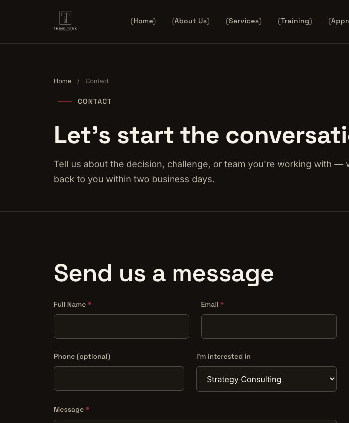

من موقع يعرّف بالشركة إلى نظام يشغّل التدريب
مقترح لـThink Tank Strategists: ما في الموقع اليوم، وما يضيفه النظام الجديد، ثم الشاشات نفسها.
مقترح للنقاش · ديسمبر 2026 · كل ما فيه قابل للتعديل
نظام التدريب · عرض الشاشات
الموقع اليوم يعرّف بالشركة جيداً
هوية واضحة، وبرامج مشروحة، وطريقة عمل مكتوبة. هذا الأساس يبقى.
- 6صفحات: الرئيسية، من نحن، الخدمات، التدريب، المنهج، التواصل
- 4برامج تدريبية معروضة، عامة ومغلقة للجهات
- 1نموذج تواصل تنتهي إليه كل الأزرار
المصدر: قراءة thinktank.com.kw في 21 نوفمبر 2026.

